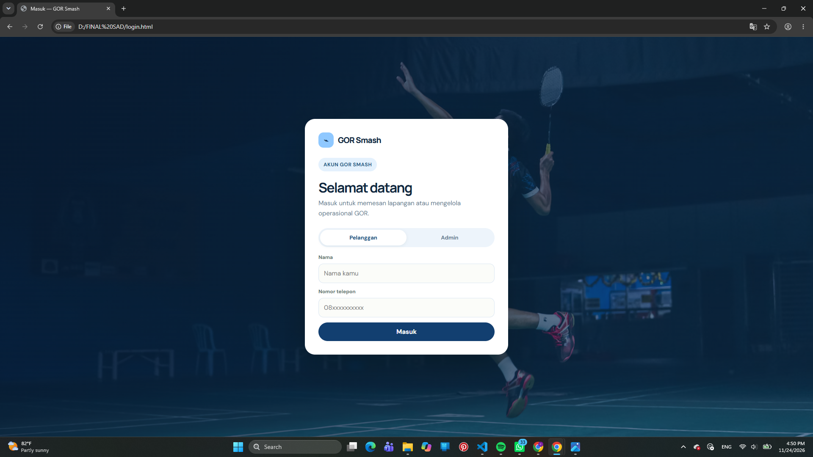
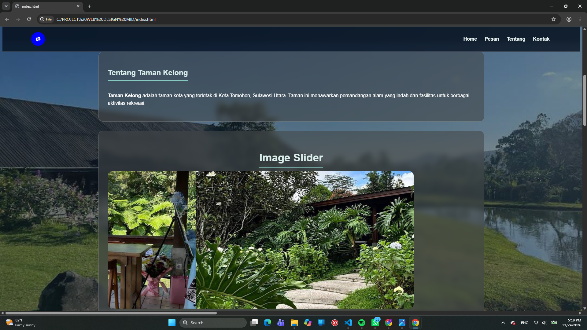
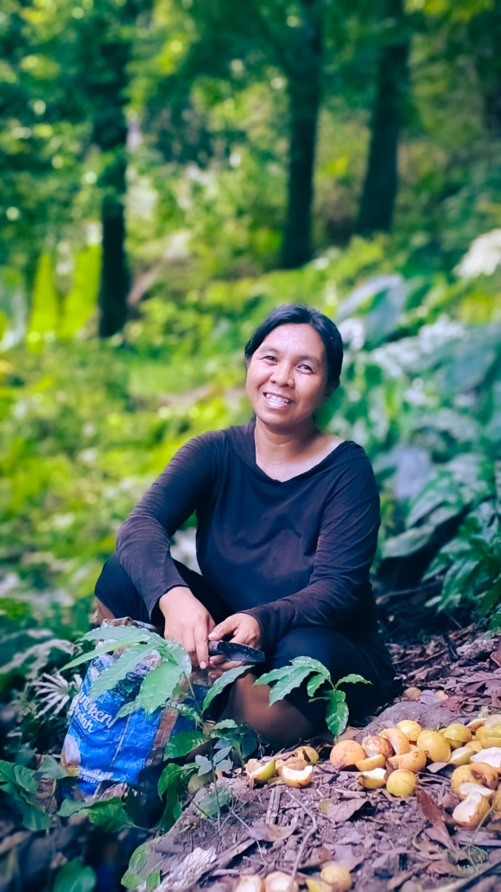

GOR-WEB SMASH
Website GOR-Smash ,sistem app web pertama saya , yang saya buat sudah di lengkapi dengan backend fornend dan hoosting.
Sebuah ruang kecil untuk cerita, karya, dan perjalanan.
Semua karya yang pernah saya buat.

Website GOR-Smash ,sistem app web pertama saya , yang saya buat sudah di lengkapi dengan backend fornend dan hoosting.

Website yang mengenalkan Taman Kelong di Tomohon, Sulawesi Utara. web pertama yang saya buat dikelas web design untuk project mid

selain di bidang teknologi saya juga tertarik dibeberapa bidang termasuk fotografi, dan ini foto pertama yang saya ambil dan saya edit. foto yang paling bermakna untuk saya.